By Oliver D'Esposito
Email: oliverdesposito@gmail.com
What is the ideal AI model for short text sentiment analysis?
A computer determining the emotion of a body of text.
"was taking pictures in the UK and beautiful this fan walked up to me"
"was taking pictures in the UK and beautiful this fan walked up to me"
"taking pictures in the UK and horrible this fan walked up to me"
"was taking pictures in the UK and beautiful this fan walked up to me"
"taking pictures in the UK and horrible this fan walked up to me"
A type of ML which uses interconnected units (mathematical functions) to learn features of data. These units are organized in layers.
Forward Feed Neural Network (FFNN): A network in which data is only moved forward
Forward Feed Neural Network (FFNN): A network in which data is only moved forward
Recurrent Neural Network (RNN): Data can be recalled therefor making it effective for sequential data
Recurrent Neural Network (RNN): Data can be recalled therefor making it effective for sequential data
Convolutional Neural Network (CNN): recognizes small patterns
Convolutional Neural Network (CNN): recognizes small patterns
Long Short Term Memory (LSTM): A RNN that fixed vanishing gradient
Long Short Term Memory (LSTM): A RNN that fixed vanishing gradient
Gradient Recurrent Neural Network (GRU): A simper and faster version of LSTM
Gradient Recurrent Neural Network (GRU): A simper and faster version of LSTM
Tweets per second
monetizable daily active users
#BML & #MeToo
Collect and analyze Tweets
My process
How to know the sentiment of a tweet
How to get sentiment
"#AEWRevolution 😃 -😭 -😢 -😥 -😞 -☹️ -😡"
"#BBMA ☹️"
class trend_query_genertor():
def __init__(self, emoji_querys, trends) -> None:
self.emoji_querys = emoji_querys
self.trends = trends.__iter__()
def __iter__(self):
return self
def __next__(self):
query_obj_list = []
trend_search_term = self.trends.__next__()
output_objs = []
for emoji_obj in self.emoji_querys:
trend_obj = emoji_obj.copy()
trend_obj['query'] = f"{trend_search_term} {emoji_obj['query']} -is:retweet"
trend_obj['trend'] = trend_search_term
output_objs.append(trend_obj)
return output_objs
37.6 Average
21 Median
CNNs are best fitted for short text sentiment analysis
CNNs are best fitted for short text sentiment analysis
CNNs are best fitted for short text sentiment analysis
How would a change in dialects effect my conclusion?
Is sequence more important for cultural nuance?
About Keras [Fact sheet]. (n.d.). Keras.io. Retrieved December 15, 2021, from https://keras.io/
about/
Anderson, M., Barthel, M., Vogels, E. A., & Perrin, A. (2020, June). #BlackLivesMatter surges on
Twitter after George Floyd's death. Pew Reshearch Center. Retrieved October 13, 2021, from
https://www.pewresearch.org/fact-tank/2020/06/10/
blacklivesmatter-surges-on-twitter-after-george-floyds-death/
Assenmacher, D., Adam, L., Trautmann, H., & Grimme, C. (2020, May). Towards real-time and
unsupervised campaign detection in social media. In The Thirty-Third International Flairs
Conference.
Batrinca, B., & Treleaven, P. C. (2014). Social media analytics: A survey of techniques, tools and
platforms. AI & SOCIETY, 30(1), 89-116. https://doi.org/10.1007/s00146-014-0549-4
BLAS (Basic Linear Algebra Subprograms) [Fact sheet]. (29, June 6). netlib.org. Retrieved December
15, 2021, from https://www.netlib.org/blas/
Browlee, J. (2019, August 12). A Tour of Machine Learning Algorithms.
https://machinelearningmastery.com/a-tour-of-machine-learning-algorithms/
Chollet, F. (n.d.). Dropout layer. Keras.io/. Retrieved December 15, 2021, from https://keras.io/api/
layers/regularization_layers/dropout/
Dettmers, T. (2015, November 3). Deep Learning in a Nutshell: Core Concepts. Deveoper Blog.
https://developer.nvidia.com/blog/deep-learning-nutshell-core-concepts/
Ghannay, S., Favre, B., Est�ve, Y., & Camelin, N. (2016). Word Embedding Evaluation and
Combination. LREC.
Ghelani, S. (2019, June 2). Text Classification � RNN's or CNN's? Towards Data Science.
https://towardsdatascience.com/text-classification-rnns-or-cnn-s-98c86a0dd361
Gundecha, P., & Liu, H. (2012). Mining social media: A brief introduction. 2012 TutORials in
Operations Research, 1-17. https://doi.org/10.1287/educ.1120.0105
Hussein, D. M. E.-D. M. (2018). A survey on sentiment analysis challenges. Journal of King Saud
University - Engineering Sciences, 30(4), 330-338. https://doi.org/10.1016/J.JKSUES.2016.04.002
Jamal, Xianqiao, & Aldabbas. (2019). Deep learning-based sentimental analysis for large-scale
imbalanced twitter data. Future Internet, 11(9), 190. http://dx.doi.org/10.3390/fi11090190
Khan, M., Malviya, A., & Yadav, S. K. (2020). Big data and social media analytics- A challenging
approach in processing of big data. Lecture Notes in Electrical Engineering, 611-622.
https://doi.org/10.1007/978-981-15-7961-5_59
Kirkorian, R. (2013, August 16). New Tweets per second record, and how! Twitter engineering.
https://blog.twitter.com/engineering/en_us/a/2013/new-tweets-per-second-record-and-how
Maheshwari, A., & OpenGenus Foundation. (n.d.). SMOTE for Imbalanced Dataset. OpenGenus.
https://iq.opengenus.org/smote-for-imbalanced-dataset/
Mehedi shamrat, F. M. J., Chakraborty, S., Imran, M. M., Muna, J. N., Billah, M. M., Das, P., &
Rahman, M. O. (2021). Sentiment analysis on twitter tweets about covid-19 vaccines usi ng NLP
and supervised KNN classification algorithm. Indonesian Journal of Electrical Engineering and
Computer Science, 23(1), 463. https://doi.org/10.11591/ijeecs.v23.i1.pp463-470
Mijwil, Maad. (2018). Artificial Neural Networks Advantages and Disadvantages.
Nvidia. (2021). CUDA Toolkit. Nvidia.com. https://developer.nvidia.com/cuda-toolkit
Prabhakaran, S. (2019, March 23). Principal Component Analysis (PCA) � Better Explained.
machine Learning +. https://www.machinelearningplus.com/machine-learning/
principal-components-analysis-pca-better-explained/
Socher, R., Perelygin, A., Wu, J., Chuang, J., Manning, C. D., Ng, A. Y., & Potts, C. (2013,
October). Recursive deep models for semantic compositionality over a sentiment treebank. In
Proceedings of the 2013 conference on empirical methods in natural language processing (pp.
1631-1642).
Staudemeyer, R. C., & Morris, E. R. (2019). Understanding LSTM--a tutorial into Long Short-Term
Memory Recurrent Neural Networks. arXiv preprint arXiv:1909.09586.
T. Makkar, Y. Kumar, A. K. Dubey, �. Rocha and A. Goyal, "Analogizing time complexity of KNN and
CNN in recognizing handwritten digits," 2017 Fourth International Conference on Image
Information Processing (ICIIP), 2017, pp. 1-6, doi: 10.1109/ICIIP.2017.8313707.
Tan, W., Wang, X., & Xu, X. (2018). Sentiment Analysis for Amazon Reviews.
https://cs229.stanford.edu/proj2018/report/122.pdf
Twitter Inverstor Relations. (2021, October 26). Selected Company Metrics and Financials [Table].
Twitter Investor Relations. https://s22.q4cdn.com/826641620/files/doc_financials/2021/q3/
Final-Selected-Metrics-and-Financials.pdf
Varol, O., Ferrara, E., Menczer, F., & Flammini, A. (2017). Early detection of promoted campaigns on
social media. EPJ Data Science, 6(1). http://dx.doi.org/10.1140/epjds/s13688-017-0111-y
West, S. (2021, July 22). Digital Activism: Social Movement on Social Media (M. Li, Ed.). Psychology
Today. Retrieved October 13, 2021, from https://www.psychologytoday.com/us/blog/
understanding-the-social-world/202107/digital-activism-social-movement-social-media
Whiting, J. (2020). Tweets show what hinders reports of sexual assault and harassment on campus -
and why the new federal title IX rules may be a step back. The Conversation : Education.
Why TensorFlow [Fact sheet]. (n.d.). TensorFlow.org. Retrieved December 15, 2021, from
https://www.tensorflow.org/about
Yin, W., Kann, K., Yu, M., & Sch�tze, H. (2017). Comparative study of CNN and RNN for natural
language processing. arXiv preprint arXiv:1702.01923.
Zhang, K. (2018). LSTM: An Image Classification Model Based on Fashion-MNIST Dataset.
Zhuang, Y., Thiagarajan, A., & Sweeney, T. (2019, March 4). Ranking Tweets with TensorFlow.
TensorFlow Blog. https://blog.tensorflow.org/2019/03/ranking-tweets-with-tensorflow.html
Thank you